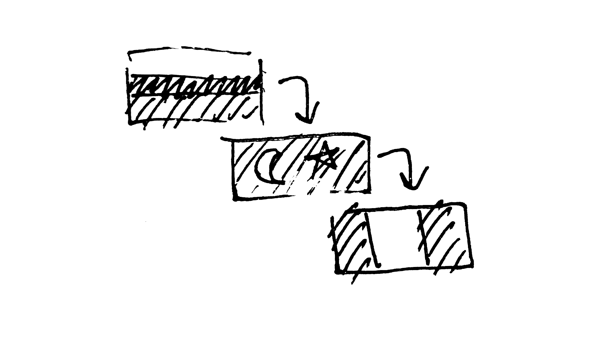

Лечу в Перу 2. Доха - Сан-Паоло - Лима
Доха #
Первые впечатления от Дохи: выходишь из самолёта - и тебя почти сбивает с ног очень горячий и очень влажный ветер. Как будто зашёл в баню и там стоит огромный вентилятор. После кондишена в самолёте очень контрастно.
Высаживают не по кишке в терминал, а на автобус. Хочется поскорее в него запрыгнуть, т.к. там тоже кондишн.
А когда заходишь в терминал - как будто из бани в холодильник 🙈
Ну а воду, которую пропустили в Стамбуле, отобрали на паспортном в Дохе 😂
Про вайфай, старбакс, розетки и британцев #
В аэропорту Дохи есть вайфай, подключение без смс, но я не знаю есть ли там ограничения по времени.
Поэтому, лайфхак. В аэропорту ищите Старбакс. Как выходите с паспортного, сразу эскалатор вниз. Спускаетесь, идёте направо и немного назад. Можно спросить у любого сотрудника аэропорта, персонал очень вежливый и учтивый.
Покупаете что угодно (я взял 2 поллитры воды за 3 бакса) и сидите на их вайфае неограниченное время.
Обращаю внимание, принимают баксы. Очень полезно было купив воду разменять 100 баксов на купюры поменьше. Потом мне это очень пригодится.
Так же стоит учесть что здесь другие розетки. В Турции были такие же как у нас, два круглых штыря. Здесь - три плоских штыря треугольником. У меня такого переходника не было, поэтому пришлось немного порасходовать заряд ноута.
Ждал следующего рейса часов 5, так что получилось поработать.
Услышал за соседним столиком классный британский акцент. Спросил, из Британии ли, спросили как догадался. Как-как, по акценту 🙂
Разговорились. Взрослая пара (лет 45-50). Летят на Мальдивы отдыхать. Спросили куда я и откуда. Рассказал свою историю. Офигели. Попросили написать как прилечу в Перу. Сказали, будут за меня переживать 😄
После того, как они ушли, осознал, что почему-то испытываю какую-то странную чрезмерную эмпатию ко всем иностранцам. Вокруг столько разных людей, из разных стран, разных культур, с разным цветом кожи, причёсками, одеждой. Писал уже.
И периодически натыкаясь взглядом на какого-то очередного иностранца или иностранку, прям хочется обнять.
По пути до гейта прям усилия приходилось прикладывать, чтоб не обнять какую-то полненькую арабку и какого-то негра в национальном костюме.
Не знаю почему.
Мож, после нервов на регистрации в Стамбуле у биохимии мозга отходняки.
Про аэропорт Дохи #
Аэропорт Дохи гигантский. Мне сначала казалось, что аэропорт в Стамбуле большой. Ха!
Чтоб было понятно, по аэропорту Дохи ходят скоростные трамваи и они там реально нужны. И трассы тревелаторов думаю с десяток километров.
В зоне С - 93 гейта. А ведь есть ещё A, B, D, E. Если там так же, то это 5 сотен гейтов. Т.е. 5 сотен самолётов можно одновременно загружать/выгружать.
Пока сидел в старбаксе - самолёты за окном взлетели и садились каждые пару минут.
Всё супер красивое, современное, всякие арт объекты. Отличная навигация, всюду стойки информации и сотрудники, которые всегда рады помочь.
Очень удобные кресла в зале ожидания посадки. Похоже даже кожаные.
Про технологии #
Улетаю из Дохи. Подхожу к гейту на посадку, протягиваю офицеру паспорт и посадочный талон, а он не глядя в них начинает со мной говорить по-русски и называет меня по имени.
Вероятно, где-то стоят камеры и по морде лица подгружают данные пассажира.
С одной стороны, офигенно, технологии. С другой, большой брат следит за нами 😱
Однако, в рамках аэропорта безопасность оправдана. И если это ещё и ускоряет обработку пассажиров (чем улучшает сервис), то наверное норм. Главное чтоб данные налево не сливали.
Про баню #
На посадке в самолёт до Сан Пауло из Дохи понял что метафора о том что на улице в Дохе попадаешь в баню, вовсе не метафора.
На входе в самолёт в кишке из терминала были неплотности и их них доносился запах натурально как из бани. Прям запах дубового веника. Вероятно, Красное море (или какое там у них) так пахнет. Ну и жар.
Любишь баню? Езжай в Доху и принимай её круглосуточно, бесплатно, в любом месте 🙂
14 часов до Америки #
Пока летели над аравийским полуостровом, видел очень много нефтяных вышек с факелами, сжигали попутный газ.
Апокалиптичная картина. Ночь, и вышки с факелами освещают окружающие их облака дыма...
14-ти часовой перелёт из Дохи в Сан Пауло - это тяжко. Вот сейчас уже прошло 9 часов полёта и уже затекло всё что может затечь.
А ещё лететь 5 часов...
Не знаю что это за самолёт, но он огромный. 10 кресел в ряд (3-4-3). Ну и расстояние до кресла перед тобой чуть побольше чем в других самолётах на которых летал.
Поэтому чуть удобнее и больше поз можно принять, чередуя места, которые отлежал совсем, с теми, которые ещё держатся.
Как повторяет реклама в медиа системе в кресле впереди - Stay hydrated and stretch your legs! (Пейте больше воды и делайте растяжку ног!)
А ещё забавно было узнать что Солнце двигается быстрее самолёта. Световой день догнал нас где-то над западным побережьем Африки и потихоньку бежал впереди нас. Но когда были над Атлантикой, медиа система показывала, что в Южной Америке ещё темно.
Южная Америка показалась впереди по правому борту на 10м часу полёта. Правда, я сидел слева 🙂
А знаю я это потому что на медиа системе можно поставить режим, в котором он то показывает текущее положение самолёта на карте мира, то показания приборов, то рендер того что видно вокруг. На нём я Америку и увидел.
Сан-Паоло #
В Бразилии холодно! В аэропорту чуть не околел. Отопления нет, поэтому внутри помещения температура как за бортом, а именно 15 градусов Цельсия.
В зале ожидания (где гейты на посадку) в Старбаксе доллары не принимают. Есть обменник с ужасно жлобским курсом. Вот тут то мне и пригодились мелкие купюры долларов из Старбакса Дохи. Кушать-то хочется, поэтому пришлось немного поменять.
Есть бесплатный интернет от аэропорта, к которому можно подключиться без смс (это важно если т.к. роуминг, детка). Но только на 2 часа. У меня с собой было два ноутбука. Планировал сначала поработать два часа на одном, потом два часа на другом. На деле оказалось, что на одном проработал 4 часа, а на другом интернет через 15 минут отрубился с концами. Причины не известны.
Лима #
Я не знаю насколько серьёзные протекционистские меры в отношении экономики принимает правительство Перу, однако во время полёта из Сан Пауло в Лиму в багажном отсеке над моей головой находилась коробка с 80-дюймовым телеком, а мой рюкзак был засунут враспор и не давал ей выпасть. 🙈
Весь полёт телек торчал в проход, заставляя стюардесс наклоняться либо вниз, либо в сторону.
Рядом со мной сидел огромный чувак по имени Лукас. Я не знаю сколько он весил, но выглядел как карикатурный толстый чувак из фильмов. Ему не хватило длины ремня чтобы пристегнуться и ему выдали дополнительную секцию ремня как удлинитель.
Чувак говорил по-английски и мы вполне мило побеседовали. Но недолго. Ибо я жутко промёрз в аэропорту Сан Паоло, а в самолёте отогрелся и меня разморило.
Причём разморило так, что я проспал еду. А я был жутко голодный!
Проснулся от удара колёс об посадочную полосу, знаменуя окончание моего 42-часового перелёта из Стамбула в Лиму.
В аэропорту меня встретил коллега и отвёз в отель. Но не с первого раза. 😄
Но это уже другая история.